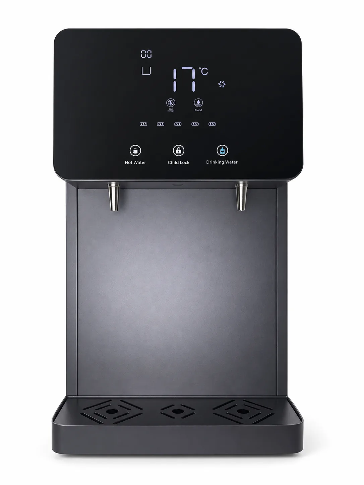
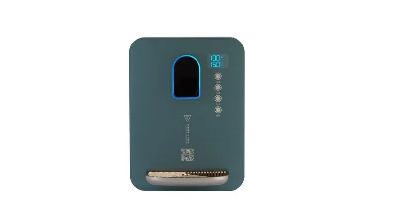
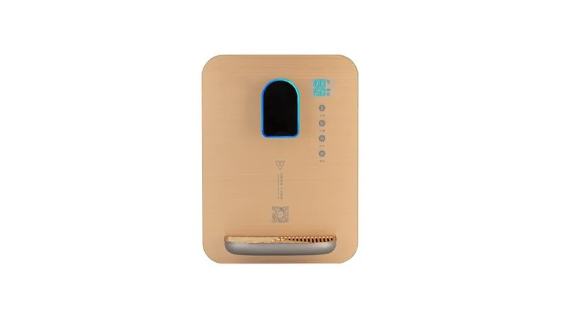

Desktop RO Water Machine with Compressor Cooling 100G
- Item
- Specification
- Product Type
- Desktop RO Water Machine with Compressor Cooling 100G
- Operating Mode
- Compressor cooling for chilled drinking water and stable countertop service
China water dispenser manufacturer for wall mounted, desktop and vertical models. OEM shell color, filter set, panel, badge and carton support.
Compare the listed models and open a detail page. Model records are counted separately from configurable dimensions; suitability must be confirmed for your project.



Yuchen Water supplies wall-mounted, desktop and vertical water dispensers. Filtration modules are selected according to water quality, usage scenario and model configuration.
Typical uses include offices, schools, clinics, apartments, retail stores and public service areas. Distributors can select ambient, hot, cold or combined configurations and build recurring revenue through replacement filter sets.
| Models | Wall mounted, desktop and vertical |
|---|---|
| Filtration | PP, CTO, GAC, UF or RO options |
| Functions | Ambient, hot or cold by model |
| Applications | Office, school, clinic, apartment and public area |
| OEM Options | Shell, panel, badge, filter set and packaging |
For private-label dispenser projects, buyers can specify shell color, front panel, control layout, tap design, filter module, brand badge, printed manual, carton artwork and spare filter kit. Sampling and pilot production are available for appliance brands and regional distributors.
Start with the installation format and service pattern, then match the water function and filtration system. Specifications vary by model, so tank volume, heating or cooling power, voltage and outlet layout are confirmed on the selected product page and quotation.
Choose wall-mounted, desktop or floor-standing installation. State whether the site needs ambient, hot, cold or combined outlets, expected daily users and available installation space.
Identify municipal or other feed water, available pressure and the required treatment objective. The filter train may use PP, carbon, UF or RO components depending on the confirmed model and water conditions.
| Site | Installation format, user count and available space |
|---|---|
| Water | Source water, feed pressure and required functions |
| Electrical | Destination voltage and plug requirement |
| Order | Model, quantity, destination and target schedule |
| OEM | Logo, shell or panel, manual, carton and spare filter kit |

Commercial Stainless Steel RO Water Dispenser E900-K27 — Size: 800 x 480 x 1520 mm; Hot tank: 27L.
Send Inquiry
E600-S Commercial RO Water Dispenser — Available With or Without a Payment System — Cabinet Material: Galvanized steel and tempered glass.
Send Inquiry
E600-S-Min Commercial RO Water Dispenser — Purified water flow: 0.26 L/min or 1.05 L/min by RO configuration.
Send InquiryDesktop RO Water Machine with Compressor Cooling 100G — Treatment Process: Four-stage filtration: PP + CTO + T33 + RO, with 100G RO capacity.
Send Inquiry
Vertical Water Dispenser MT-E600 — Filtration: PP, CTO, GAC, UF or RO module options.
Send Inquiry
SY-0823F Instant Heating Water Dispenser – Pearl White — Tempered-glass, three-second instant-heating design with an electronic child lock, five water-volume settings and five temperature settings. Rated power: 2,200 W.
Send Inquiry
SY-0826F Instant Heating Water Dispenser – Dark Green — Tempered-glass, three-second instant-heating design with an electronic child lock, five water-volume settings and five temperature settings. Rated power: 2,200 W.
Send Inquiry
SY-0828F Instant Heating Water Dispenser – Gold — Tempered-glass, three-second instant-heating design with an electronic child lock, five water-volume settings and five temperature settings. Rated power: 2,200 W.
Send Inquiry
1000W Vertical Water Dispenser MT-DV-E600 — Display: LED Digital.
Send Inquiry
SY-0828F Instant Heating Water Dispenser – Gold — Tempered-glass, three-second instant-heating design with an electronic child lock, five water-volume settings and five temperature settings. Rated power: 2,200 W.
Send Inquiry
Vertical Water Dispenser MT-V-E300A — Color: Black/White.
Send InquiryYes. Packaging and labeling details are confirmed by model and order scope.
Share model, quantity and destination for quotation.